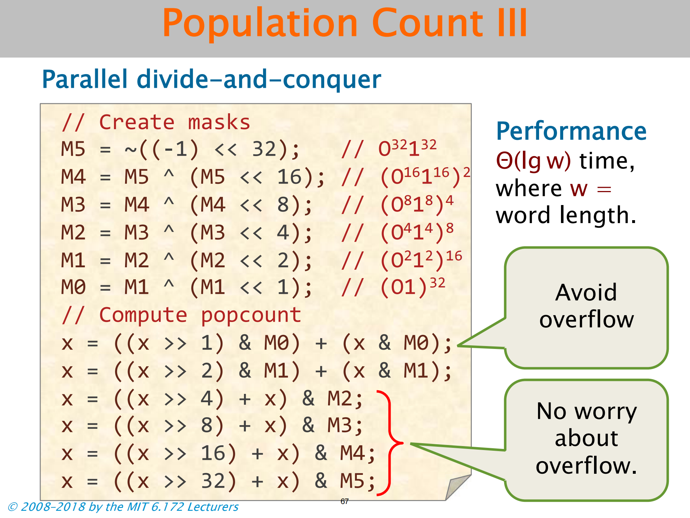

Bit Hacks
二进制表示
略
反补码性质
略
八进制、十六进制
略
位运算符
略
Set the kth Bit
y = x | (1 << k);
Clear the kth Bit
y = x &(1 << k);
Toggle the kth Bit
y = x ^ (1 << k);
Extract a Bit Field
(x % mask) >> shift;
//mask 将待抽取的位 置一

Set a Bit Field
x = (x & ~mask) | (y << shift);
//For safety’s sake:((y << shift) & mask)

Swap
Ordinary Swap
t = x; x = y; y = t;No-Temp Swap
x = x ^ y; y = x ^ y; x = x ^ y;Why it works : XOR is its own inverse (x ^ y) ^ y = x
Performance : poor at exploiting instruction-level parallelism(slower than the original code)
Minimum of Two Integers
Ordinary Minimum
r = (x < y) ? x : y;Performance : A mispredicted branch empties the processor pipeline Caveat : The compiler is usually smart enough to optimize away the unpredictable branch, but maybe not.
No-Branch Minimum
r = y ^ ((x ^ y) & -(x < y));
Merging Two Sorted Arrays
if branch is predictable: most of the time it retrun true, and once it return false you are never going to look at that again. it is predictable = it can do prefetching efficiently
Modular Additon
- n 是 2 的幂
- z 可能小于 n
- 同 minimum 方法
Round up to a Power of 2
进一至 2 的幂次


注意向右填充所有位的方法
这是一种处理边界条件的方法
Least-Significant 1
最小的 1

Log Base 2 of a Power of 2
课堂表演魔术-利用德布鲁因序列的数学性质

- 德布鲁因序列
n Queens Problem
- 每一行从左往右试 符合就下一行。若都不符合就上一行继续往后试
- 三个向量 分别对应下文三图


Population Count

- 留意清除最低位的 1 的使用
- 数字小的时候才好用
- 内存操作的成本是性能的主要瓶颈

- 这里加法是真加法 不是或



- popcount 指令比自己编码快很多
英语词汇笔记
| 单词 | 解释 |
|---|---|
| binary | 二进制 |
| prefix | 前置 |
| toggle | 切换 |
| prefetching | 预取 |
| Modular | 模 |
| boundary case | 边界条件 |